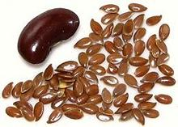
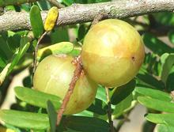
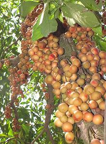
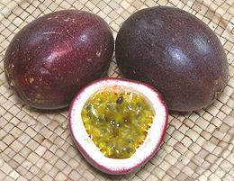
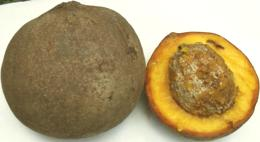

SAFARI
Users
Spurge Family
[Euphorbiaceae]
The Euphorbia are a truly vast family with over 8,000 species, almost
all of which are slightly to extremely toxic, or at least allergenic,
yet the family includes one very important edible plant (edible so long
as you eat only the right parts) and some others with significant
culinary and industrial uses. Many have significant medicinal
value. The
Spurge Family has its own page.
Photo © i0115
.
Mangosteen Family
[Clusiaceae]
Clusiaceae is a modest size family of 14 genera containing about
595 species, a fair number of which bear edible fruit. Because the
mangosteen fruit is exotic, expensive and loaded with antioxidants, it
is being heavily promoted by the "health food" industry as a
"miracle fruit". When that wears out, there's other members of the family
to take its place.
The
Mangosteen Family has its own page.
Flax / Flaxseed
 [Family Linaceae; Linum usitatissimum]
Common flax is native from the eastern Mediterranean on east to India, and has been planted in many other regions of Europe, North America, and Africa. It is well known as the source of fiber for making linen cloth, but also has a varity of food uses.
Flax seeds are about 1/4 inch long, hard and shiny. They are pressed for
linseed oil, which has been much used in oil based paints, varnish and
in the manufacture of linoleum. Edible oil is called Flaxseed Oil and has
some health benefits, but is quite perishable. Whole Flaxseed has more
health benefits if freshly ground, but is also perishable in that
form, so care is needed.
Details and Cooking.
African Bush Mango
[Wild Mango, Bush Mango, Dika; Ogbono (Ibo (kernels)); Agbalo (Hausa); Oro, Obo, Absebuo, Goron Biri, Moupiki, Muiba, Eniok, Andok (Nigeria); Afemai (Edo); Apon (Yoruba); Bobo (Sierra Leone); Boboru, Wanini (Ivory Coast); Andok (Cameroon); Meba, Mueba (Congo); Irvingia gabonensis]
This tree, growing to 130 feet, is native to West Africa from Senegal to
northern Angola, and southwest through the Democratic Republic of the
Congo. It is a very economically important tree, bearing small, edible,
mango-like green fruits, particularly valued for the seeds they
contain. In the West, this tree is now very much in vogue for reputed
weight loss from seed extract.
Details and Cooking.
Bruguiera
[Family Rhizophoraceae, Genus Bruguiera: Black Mangrove; B. gymnorrhiza | Upriver Orange Mangrove; B. sexangula | B. cylindrica & others]
All members of this of this genus inhabit mangrove swamps, generally on the sea side of the swamp. The photo is of a B. gymorrhiza plant with fruit pods developing right out of the center of flowers. The fruit pods can be up to 4-3/4 inches long, and contain embryos rather than seeds. Ripe pods drip into the mud and the embrios quickly develop roots.
B. gymorrhiza is native to southeast Africa and the Maldive
islands southwest of India. In the Maldives, developing fruit pods are
peeled, then boiled in water as a vegetable, changing the water at least
four times. B. cylindrica is native from the Maldives through
India and Southeast Asia to Papua New Guinea and Queensland Australia.
In Thailand the root tips are much liked, the bark is used as a spice,
and leaf shoots are cooked as a vegetable. In the Maldives, developing
fruit pods are used the same as those of B. gymorrhiza, which is
preferred. B. sexangula is native to Southeast Asia, Australia
and New Caledonia. Developing fruit pods are soaked, then cooked as a
vegetable.
Photo by C T Johansson distributed under license
Creative Commons
Attribution-ShareAlike 3.0 Unported.
Indian Gooseberry Family
[Phyllanthaceae] This is a sizeable family of at least 54 genera. Many species within are well known trees and shrubs with very wide distribution.
Star Gooseberry[Otaheite gooseberry, Tahitian / Malay / West India gooseberry, Grosella (Puerto Rico), Phyllanthus acidus] This tree-like shrub, thought native to Madagascar, was formerly listed as a Spurge (family Euphorbiaceae). It is completely unrelated to actual gooseberries which are in a totally different order, Saxifragales. This berry is now grown mainly in Southeast Asia, and judging from
the number of brands of pickled ones available in my local Asian
markets it is quite popular there. Some are grown in Hawaii for local
consumption. Since introduction to Jamaica, it has managed to spread
through the Caribbean and to Central and South America. The photo
shows pickled ones up to 7/8 inch diameter, 5/8 inch high and weighing
8 to the ounce. They are crisp, quite tart but tempered with sugar,
and have a single stone (shown to left in photo). They are also cooked
with sugar until they turn red and are used to make jelly, or can be
crushed for juice used to make beverages.
Bignay[Bignay, Bugnay, Bignai (Philippines); Queensland Cherry, Current Tree, Wild Cherry (Australia); Antidesma bunius | Hame, Ha'a, Mehame, Hamehame, Mehamehame, Ha'amaile (Hawaii) Antidesma platyphyllum & many others]
This genus of about 100 species is endemic to Southeast Asia,
Queensland Australia, southern China and as far east as Hawaii, with
at least one species in Nigeria (probably introduced through trade
with South / Southeast Asia). They range from short shrubs to trees
nearly 100 feet high. The fruits, about 0.4 inch diameter, are edible
but a little hard to harvest because bunches don't ripen evenly. They
are sour and astringent when white, sour when red, and sweet-tart when
fully ripened to black.
Photo of A. platyphyllum by
Forest and Kim Starr
distributed under license Creative Commons
Attribution-ShareAlike 3.0 Unported, attribution required,
notification appreciated.
Bishop's Wood[Toog Tree, Koka, Tiger Tree (English); Urium (Asam); Qiu feng (China); Thondi, Milachityan (Tamil); Nili, Cholavenga, Thiruppu, Mlachethayan (Malayalam); Bischofia javanica] This substantial tree (to 75 feet) is native to South and Southeast Asia and to Australia and Polynesia as well as Taiwan and the southern half of China. An attractive shade tree, it has become invasive in southern Florida, Southern California, and Caribbean Islands. Female trees bear clusters of berries about .35 inch (9 mm) diameter which can be brown, reddish or blue-black when ripe. The fruit is fermented into wine. The seeds are edible and contain
about 40% oil, but that oil is used mainly as a lubricant rather
than in cooking. Young leaves are eaten in Laos, dipped in
chili sauce, or cooked as a vegetable or used in salads. Roots and
bark are used medicinally.
Photo by Wie146 distributed under license
Creative Commons
Attribution-ShareAlike 3.0 Unported.
Indian Gooseberry [Amla (India); Ma kham pom (Thai, Laos); Kam lam, kam lam ko (Cambodia); Bong ngot (Viet S.), Chu me (Viet N.); Nelli (Philippine); Melaka, Asam Melaka (Malay); Phyllanthus emblica syn Emblica officinalis] Native to tropical South and Southeast Asia, this medium size tree (up to 59 feet) bears greenish yellow spherical fruit, between 1 and 2 inches diameter with a single small stone in the center. The fruit is firm, sour, somewhat bitter, astringent and fibrous, and very high in vitamin C. It is not available fresh in Southern California, but Indian markets here have it as dried pieces and dried powder, under the name Amla. To eat this fruit fresh, it is steeped in salt water and turmeric
or chili, but it is more commonly salt pickled with oil and spices,
particularly in southern India where the preserves are popular with
dal. In northern India the fruits are given a very long soak in sugar
syrup, then incorporated into deserts. The fruit, fresh or dried, is
used as a souring agent, sometimes as a substitute for Tamarind.
In Indian recipes it is also a common standard descripter for the
size of a lump of Tamarind pulp. Various parts of this tree are
also of significant medicinal value, with research ongoing.
Photo by Chong Fat distributed under license
Creative Commons
Attribution-ShareAlike 3.0 Unported.
Baccaurea [Genus Baccaurea: Tampol; B. macrocarpa | B. racemosa | Rambai, Rambi; Mafai-farang (Thai); B. motleyana | Burmese Grape; B. ramiflora & others] These mid-size trees (40 feet or so) are native from India through Malaysia. They bear fruit on long strings that sprout directly from the tree trunks and branches. Fruit can range from 3/4 inch to 2 inches diameter and is usually orange when ripe, but Burmese Grape fruit may be yellow through bright red to purple and between 1 and 1.4 inches diameter. The taste of these fruits is sweet and
tangy, with Tampol being similar to tangerines in flavor. Rambai is
cultivated for fruit in Thailand and Malaysia. The fruits are fairly
perishable and are often salt pickled for storage. They are also
fermented into wine or made into jams. Bark, roots and
wood are used medicinally.
Photo of Tampol distributed under license
Creative Commons
Attribution-ShareAlike 3.0 Unported.
|
Passion Fruit
 [Maracujá (Portuguese); Maracuyá, Parcha (Spanish); Grenadille, Fruit de la Passion (French); Liliko'i (Hawaiian); Mburukuja (Guarani); Markisa (Indonesia); Saowarot (Thai); Chanh Day (Viet); Granadilla purple, Guavadilla yellow (South Africa); Chinola (Dominican Republic); Passiflora edulis and other Passiflora species of Family Passifloraceae]
These perennial vines are native to Brazil, Paraguay, Uruguay, and
northern Argentina. They are now grown in tropical and subtropical
regions worldwide, including California and Florida.The fruits are eaten
fresh in some regions, but its main uses are for juice, used in many
beverages (alcoholic and non-alcoholic alike) and in deserts. There are
two varieties, the normal purple, and the much larger (up to grapefruit
size) yellow var flavicarpa which is not as popular due to often
being more acidic and less aromatic. The yellow is sometimes used as
vigorous rootstock with the purple grafted on. Other Passiflora
species are less widely known.
Details and Cooking.
Barbados Cherry Family
[Malpighiaceae] This is a sizeable family of at least 54 genera, many species within are well known trees and shrubs with very wide distribution.
Nance[Nanche, Nance, Nancite, Chacunga, Changunga, Craboo, Kraabu, Savanna Serrette, Savanna Serret, Golden spoon; Byrsonima crassifolia]
This medium size (to 33 feet) drought tolerant tree is native from
central Mexico down to Brazil, and on most islands in the Caribbean.
It is found from sealevel to 6000 feet. This fruit is eaten raw and
cooked in desserts. It is also used as a flavoring in various
alcohohlic and non-alcoholic beverages, and is cooked in sugar
and water to make a candy. They are somewhat sweet, not tart, and
have an unusual aromatic flavor. The photo specimens were between
0.7 and 0.9 inch diameter and weighed about 5 to the ounce.
Barbados Cherry[Acerola; West Indian Cherry; Phyllanthus emblica]
This small tree, native to Andean South America from Columbia to
Peru, including Venezuela and western parts of Brazil, can grow to 20 feet, but is usually
less than 10 feet high. It is now grown in the tropics and
subtropics in many countries around the world, and as far north as
southern Florida and the lower Rio Grande valley of Texas. The bright
red fruit ranges from 0.4 to 1.2 inches diameter and contains three
triangular seeds. It is very high in vitamin C, manganese and
antioxidants. They range from sour to sweet depending on growing
conditions. The fruit is eaten fresh and as juice and pulp in it's
native range, and grown for vitamin C in most non-native regions.
Photo by Mateus Hidalgo taken in Brazil distributed
under license Creative Commons
Attribution-ShareAlike 2.5 Brazil.
Peanut Butter Fruit[Bunchosia armeniaca, Bunchosia argentea, Bunchosia glandulifera]
These three very similar Bunchosia species are small to
medium size trees native to Andean South America, commonly growing
to about 25 feet high. The orange fruits are about 1 inch long, with
dense flesh resembling dried figs or peanut butter, with an
unmistakable peanut butter scent. Most are eaten fresh, but they can
be made into preserves. Apparently B. glandulifera is often
mislabeled as B. argentea and is the most commonly grown
species in North America and much of South America.
Photo of Bunchosia argentea by Asit K. Ghosh
distributed under license Creative Commons
Attribution-ShareAlike 3.0 Unported.
|
Coco
[Family Erythroxylaceae (Coco Family); Erythroxylum novogranatense]
This plant is not actually edible - it is the source of the drug cocaine.
It is listed here because it is such a high profile plant and to show
the breadth of the Violet family. It is native to the drier highlands of
South America, but is now also farmed on the island of Java, Indonesia.
Photo by Dbotany distributed under license Creative
Commons
Attribution-ShareAlike 3.0 Unported.
St. John's Wort
[Tipton's Weed, Chase-devil, Klamath weed; Hypericum perforatum and other Hypericum species of family Hypericaceae]
This famous medicinal herb is not used in culinary practice, but is
included here for perspective.
Photo by Michael H. Lemmer distributed under license Creative
Commons
Attribution-ShareAlike 3.0 Unported.
Cocoplum Family
[Chrysobalanaceae] This is a modest size family of 17 genera containing about 460 species of tropical trees and shrubs.
Cocoplum[Paradise Plum, Icaco; Gbafilo (Nigeria (seeds)); Chrysobalanus icaco] Native to the tropical Americas and Caribbean, including southern Florida and the Bahamas, this large shrub can grow over 20 feet tall. Fruit of the coastal variety can be as large as 2 inches diameter, and is usually light yellow with a pink blush, but it can also be dark purple. Fruit of the inland variety is usually 1 inch diameter and dark purple. The fruit is eaten raw and made into preserves. The seed kernels
are also eaten, either raw or roasted. Dried seeds are ground for
use in Nigerian Pepper Soup. Opinions on the raw fruit vary
from sweet-sour and cottony to soft and sweet. The seed kernels are
about 21% oil, which can be pressed and used in place of almond oil,
or to make soap and the like. The photo was take in southern Florida.
Details and Cooking.
Photo by
Forest and Kim Starr
distributed under license Creative Commons
Attribution-ShareAlike 3.0 Unported, attribution required,
notification appreciated.
Mobola Plum[Mupundu; Parinari curatellifolia]
Native to sub-Saharan Africa from Senegal in the west to Chad and Kenya
in the east, and in central Africa south through Zambia and Zimbabwe,
this tree grows to 72 feet high. The fruit has traditionally been
gathered in the wild, but the tree has potential for cultivation. The
fruit is quite delicious and the seeds have a high oil content suitable
for cooking. Aside from being eaten out of hand, the fruit pulp is
crushed for use in various beverages, and is fermented into alcoholic
beverages.
Photo by Hans Hillewaert distributed under license
Creative Commons
Attribution-ShareAlike 3.0 Unported.
Others[of family Chrysobalanaceae] There are a number of fruit bearing trees in this family, but since the information available to me comes from botanists, and botanists don't care a bit about the edibility of fruit, they care about leaves and flowers, I have neither photos or good descriptions.
|
Souari Nut Family
[Caryocaraceae] This is a small family of 2 genera containing about 25 species of tropical trees and shrubs. There are more edible species than I have listed here, but I have no information on them.
Pequi[Souari nut; Caryocar brasiliense] This small tree (to 30 feet high) is native to west central Brazil, where the fruit it bears is quite popular. The fruit are round to oval and about 3 inches diameter, turning bright orange when ripe. They contain 1 to 4 segments in which the same number of seeds are surrounded by an edible pulp. The pulp has a strong taste and aroma described as sweet, fruity and cheesy. It is both eaten raw and cooked as an ingredient in recipes, particularly with rice and chicken. It is also used as an ingredient in beverages. The seeds have a lot of prickly spines, which can be scraped off
after drying for a few days. The nuts are cracked open and the
kernels are roasted with salt and eaten as a snack. Unfortunately
this tree is now under pressure due to land clearing for logging,
and the planting of eucalyptus, so it is becoming scarce.
Photo © Denis A. C. Conrado. Permission granted
for use provided it is properly attributed.
Pecia Nut[Butter-nut of Guiana; Caryocar nuciferum]
This large tree (to 115 feet high) is native to Costa Rica, south
through Columbia and Venezuela to northern Brazil. It bears large
round or pear shaped fruit up to 6 inches diameter and weighing over
6 pounds. These contain 1 to 4 large nut-like seeds, the kernels of
which are considered very fine eating with a flavor similar to almonds
but sweeter. They are eaten both raw and roasted. An edible non-drying
oil can be pressed from them.
Drawing copyright expired.
|
Mamea Family
[Calophyllaceae] This is a new family of 14 genera created by the Angiosperm Phylogeny Group (AGP III), found necessary from results of genetic evaluation. The included genera were moved from other families where they had been placed by traditional taxonomy.
Mammee Apple [Mamey, Mamey Apple, Santo Domingo Apricot, South American Apricot; Mammea americana] Not to be confused with the Mamey Sapote (Pouteria sapota)
the fruit of which is also called mammee or mamey, this tree is native
to tropical South America and Central America as well as the West
Indies. It is now also grown in West Africa, Southeast Asia, Hawaii
and Florida. The roughly spherical fruit is up to 8 inches in
diameter with 1 to 4 seeds depending on size. The fruit can be eaten
in fruit salads but is commonly made into beverages, including
alcoholic beverages. In some cases the fruit flesh is soaked in
salt water to remove bitterness.
Photo by
Fibonacci
distributed under license Creative Commons
Attribution-ShareAlike 3.0 Unported (attribution required).
Nag Kesar[Nagkesar, Nagkeshar; Mammea longifolia]
These flower buds are used as a spice in Korkani and Maharashtrian
cuisines in India. It is not a strong spice, but has a slightly woody
aroma with a vague hint of citrus in the taste. The photo specimens,
purchased from an exporter in India, were about 0.15 inch diameter.
2014 US $9.99 per 100 grams (3-1/2 ounces).
|
Willow Family
[Salicaceae] This is a sizeable family of at least 59 genera, many species within are well known trees and shrubs with very wide distribution, but not much to eat.
Willows[Genus Salix]
This is a large genus of between 350 and 400 known species - but,
sorry, there's nothing at all to eat here. The only culinary
application for willows has been for weaving baskets to carry food
in. They are, however, noted medicinals, some species containing
significant amounts of salicin, source material for the salicylic
acid in aspirin. Back in the days of my childhood we made whistles
from willow branches. The bark could be pushed off, the wood carved
as needed and the bark pushed back into place.
Photo by Ugur Basak distributed under license Creative
Commons
Attribution-ShareAlike 3.0 Unported.
Wonder Tree[Chinese Wonder Tree; Igiri (Japan); Idesia polycarpa]
This large tree (to 50 feet), often planted as a decorative, is native
to East Asia, including China, Korea, Japan and Taiwan. Female trees
are heavy producer of long panicles of edible red fruit between 0.2 and
0.4 inch diameter. The fruit is a bit seedy, but edible either raw or
cooked. Both male and female trees must be together to produce
significant amounts of fruit. This fast growing tree is listed by
Plants for a
Future.
Photo by Henry Hartley distributed under license Creative
Commons
Attribution-ShareAlike 3.0 Unported.
|
Keluak
 [Keluak, Keluwak (Indonesia); Kepayang (Malay); Pangium edule of
family Achariaceae]
[Keluak, Keluwak (Indonesia); Kepayang (Malay); Pangium edule of
family Achariaceae]
This large tree (to 80 feet high), native to Indonesia, Papua New Guinae and Malaysia, bears large round fruit up to 10 inches diameter, sometimes called "football fruit". The fruit contains soft yellow pulp that is highly aromatic and highly toxic (cyanide), in which are embedded seeds about 3/4 inch long, which are also highly toxic.
Fruit are gathered in the wild. The seeds are boiled, then buried
in ashes, banana leaves and soil for about 40 days to ferment and turn
black. They are then washed and ground into a black paste called rawon,
an essential ingredient for a number of popular Indonesian recipes.
The paste may be dried and ground to powder for longer storage.
Photo by Midori distributed under license Creative Commons
Attribution-ShareAlike 3.0 Unported (attribution required).